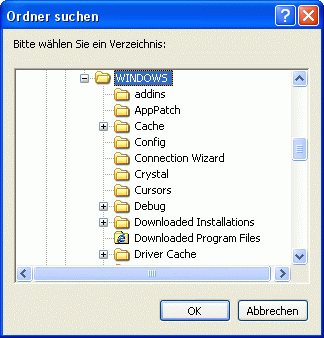

FOLDERBOX
FOLDERBOX
FOLDERBOX
FOLDERBOX
| Syntax: | FOLDERBOX Verzeichnis = Aufforderungstext, Vorgabepfad |
| Beschreibung: | FOLDERBOX zeigt einen Standard-Auswahldialog zum Auswählen eines Verzeichnisses an. Als Parameter erwartet diese Funktion einen Aufforderungstext sowie einen optionalen Vorgabepfad. Rückgabewert ist das gewählte Verzeichnis oder ein Leerstring, wenn kein Ordner gewählt wurde oder der Benutzer den "Abbrechen"-Button klickt.  |
| Beispiele: | folderbox [pfad] = 'Bitte wählen Sie ein Verzeichnis!', 'C:\jmksf\rb5' if [pfad] ! '' echo 'Das gewählte Verzeichnis lautet: ' # [pfad] else echo 'Kein Verzeichnis gewählt.' endif |
| Bemerkungen: | Verwenden Sie die Dialoge OPENBOX und SAVEBOX, um die Auswahl einer Datei zu ermöglichen. |